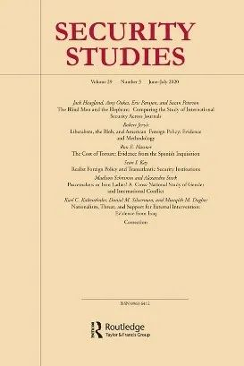

收录于合集

作品简介
【作者】 罗伯特·杰维斯Robert Jervis，哥伦比亚大学国际政治学教授，擅于从心理学角度研究对外政策，同时专长于安全政策、决策以及冲突与合作的理论。
【编译】 阮镇炜（国政学人编译员，伦敦大学学院）
【校对】 杨帆 李雯珲
【审核】 丁伟航
【排版】 李文博
【美编 】黄竹音
【来源】 Jervis, R. (2020) ‘Liberalism, the Blob, and American Foreign Policy: Evidence and Methodology’. Security Studies, 29(3), pp. 434-456.
期刊简介

《安全研究》（Security Studies）收录出版创新性的学术稿件，包括理论研究、实证研究或两者兼有。《安全研究》包含广泛的议题，从核扩散、核威慑、军民关系、战略文化、种族冲突、流行病与国家安全、民主政治、外交决策到定性与多方法研究的发展，等等。该期刊2019年的影响因子为2.167。
自由主义、对外政策建制派
与美国对外政策：论据与方法论
Liberalism, the Blob
and American Foreign Policy: Evidence and Methodology
罗伯特·杰维斯（Robert Jervis）
内容提要
约翰·米尔斯海默(John J. Mearsheimer)和斯蒂芬·沃尔特(Stephen M. Walt)认为：自冷战结束以来，美国对外政策一直都是失败的，而这种失败归咎于美国国内的政治体制。米尔斯海默认为自由主义的现有形式是有缺陷的；而沃尔特认为自由主义是对外政策建制派(“the Blob”)的共识，这种共识是美国对外政策失败的原因。虽然这些论点有一定道理，但它们没有充分的论据作为支撑，因为这两位学者都忽视了一些标准的检验方法，如：反事实法(“counterfactuals”)、假说演绎法(“hypothetical- deductive method”)和比较分析中的差异法（译者注：原文为“the use of comparisons to countries or cases in which the posited independent variable is absent”，译者按照理解译为穆勒的差异法）。 从这种角度考察这些论点能暴露其弱点，并为进一步检验提供机会；突出现实主义理论化过程中的解释性与规范性之间的矛盾；并指出低估环境因素影响的其他案例。
文章导读
01
开篇引言
米尔斯海默的著作 (“The Great Delusion: Liberal Dreams and International Realities”，中文版《大幻想：自由主义之梦与国际现实》)和沃尔特的著作 (“The Hell of Good Intentions: America’s Foreign Policy Elite and the Decline of the U.S. Primacy”，《参考消息》译为《好意的地狱：美国外交政策精英与美国霸主地位的衰落》)均批评了后冷战时期的美国对外政策，并把矛头指向美国国内的体制安排和内部冲动。他们开辟了多条研究的路径，但在本文中作者想通过反事实法、比较分析、以及假说演绎法，更仔细地去思考论据。在结尾部分，作者分析了当理论既是描述性的又是处方性的时候所带来的矛盾，并指出轻视环境变量是很常见的现象。使用以上方法进行分析，本文会揭露这两本著作中论断的弱点，表明美国的许多行为看起来与其他大国并无本质区别，并且为进一步的研究指明道路。
尽管这两本书所作的判断以及所揭示的因果机制有许多重大差异，但书中很多观点是一致的。两者都将理论与政策处方相结合，且都认为 后冷战时期的美国对外政策是失败的，而美国本可以通过更加克制的对外政策而做得更好。
美国两党领导人遵从着美国政治价值观，拥护自由主义，因为他们相信政治始于个人，许多基本权利和价值观是普世适用的且倾向于民主。因此，这否定了米尔斯海默所认为的关于人性的根本事实，即：人类天生就是社交动物，他们强烈地依附于群体（现代生活而言，即国家），不同的文化有着不同的价值观。自由主义者相信在世界上推广民主不仅使美国和其他民主国家更加安全，而且这是相对容易做到的，因为这种政府组织形式不需要大量的先决条件；当民主化的障碍被消除时，民主自然会到来。这是米尔斯海默和沃尔特所使用的“自由主义(Liberalism)” 概念的定义，因此文中作者把它的首字母大写以表明这个定义。
沃尔特和米尔斯海默认为，自由主义对国内生活来说是一个正确的哲学指导，因为在国内生活中，国家保证了国内的安全，每个人都能把自己的潜力最大化并按照自己喜欢的方式生活。但是，这种理解在国际政治中是错误的，因为国际体系处于无政府状态，没有一个更高的威权去保证国家的安全。自由主义低估了民族主义的力量，认为其价值观是普世的，自由民主政权之间不会相互攻击，并声称专制国家很可能扰乱现状。这些都导致了自由主义政权千方百计地试图推广自由主义。其 结果 就是我们从后冷战时期的美国对外政策中所看到的： 频繁地试图推动别国政权更迭并使用武力消除专制政权。然而，这些努力都失败了或最终事与愿违，因为民族主义的现实和美国没有认识到它巩固自由主义世界秩序的努力如何威胁到其他国家的合法利益，其中典型的例子就是北约的扩张以及干涉科索沃。
事实上，当强调美国对外政策（至少是在后冷战时期）是国内体制的产物时，沃尔特和米尔斯海默几乎没有谈论国内利益和制度，以及它们影响对外政策的方式。沃尔特在书中强调了国内对外政策建制派(“the Blob”)的重要性，但它具体如何施加影响仍然是不太清晰的。
我把沃尔特和米尔斯海默的这两本书看作一个整体，但是它们有一个重大区别，而这可以从两本书的副标题看出来： 沃尔特的是“美国的对外政策精英与美国霸主地位的衰落” （《参考消息》译为“美国外交政策精英与美国霸主地位的衰落”） ，而米尔斯海默的则是“自由主义之梦与国际现实”。 沃尔特聚焦于对外政策建制派；而尽管米尔斯海默强调与精英相比，美国民众对于不加制约的自由主义对外政策的支持度更低，但是他认为自由主义拥有更深厚的社会基础。除此之外，实证检验或许也能区分沃尔特和米尔斯海默的观点。对沃尔特而言，削弱对外政策建制派的凝聚力或权力，并允许舆论扮演更为重要的角色，这会使美国的对外政策更加克制。虽然米尔斯海默赞同舆论或许能引导出更好的对外政策，但他的主要观点是民众共有的自由主义观念导致过度扩张，尤其是当某个扩张政策的成本并不明显的时候。重大事件或丑闻或许会削弱对外政策建制派，但不会影响自由主义的力量。这种情况之下，沃尔特会期望政策改变，而米尔斯海默则不会。
虽然两位作者都没有探讨自由主义和对外政策建制派之间的关系，但也许有人会使这两个因果机制变得兼容且相互补充。米尔斯海默对自由主义的强调使其被转化为政策的机制变得模糊。而且，通过教育和相互之间加强交流，对外政策建制派的成员也可能具备自由主义的精髓。这种情况的另一面则是，社会对自由主义的广泛支持解释了为何对外政策建制派在意识形态上相对同质化以及持有各种它所持有的实质性观点。
02
彻底的失败—与何比较？
米尔斯海默、沃尔特以及其他批评者正确地认识到美国的对外政策并没有达到90年代初的预期。但是在我们把其归咎于自由主义或对外政策建制派之前，我们应注意到衡量成功或失败的合适标准并不是完全清晰的。也许主要的问题是我们期望过高。因此，我们也许可以归咎于自由主义，但这并不意味着美国所采取的政策导致了比采取其他政策更为糟糕的结果。而且，我们可能夸大了当前世界的不足。尽管大国关系趋于紧张，但大多数人认为不会由此导致战争；国际经济表现不错，增长放缓的根源在于国内政策和人口结构的变化；除了也门和叙利亚，其他地区的内战形势和90年代高峰时期相比有所下降。与90年代所抱有的各种希望相比，国际体系似乎是难以管理且危险的，而与大多数年代相比，它看起来也不是太坏。而且现实主义认为：大国竞争是不可避免的，在一个充满国家忠诚、不确定性以及处于无政府状态的世界中，激烈的争斗是对外政策冲突的正常结果。抱着这一信念，他们又怎么能期望美国的其他政策选项可以引导出一个更美好的世界呢？
03
反事实
沃尔特和米尔斯海默认为，美国把影响力扩展至苏联前院，并试图把自由民主带到像利比亚、伊拉克、阿富汗这样的国家，对外政策建制派和普世自由主义意识形态错误地以为自由民主能在这些国家轻而易举地建立起来，这种美式过度扩张极大地损害了整个世界和美国自身。
作者想强调，一个含蓄的反事实就是假如美国采取了一项不同的政策，那么事情会变得更好。这也许是对的，但一个更令人信服的观点会把这个反事实变得更加清晰明确。例如，当包括我在内的很多人反对北约扩张并质疑美国在科索沃的政策时，许多俄罗斯专家把责任归咎于俄罗斯国内糟糕的政治关系和普京的世界观及其动机。我们应当承认即使没有北约的扩张，随着俄罗斯从90年代的低谷中恢复，它也会不遗余力地把前苏联中的共和国和华沙条约的成员国划入它的势力范围，从而导致俄罗斯与美国以及西欧之间出现矛盾和摩擦。如果俄罗斯寻求更大的影响力，而它的任何邻居都没有得到来自西方的安全保证，这是否比当前的形势更加危险？这是一个更具假设性的问题，但若要谴责美国对外政策，就需要解决这个反事实。
另一个例子则是伊拉克。米尔斯海默、沃尔特和大多数现实主义者预见性地反对入侵伊拉克。但在此我们不应假定一个良性的反事实。虽然萨达姆没有开展大规模杀伤性武器项目，但是他计划在制裁机制衰退后重新开启这些项目。假如美国在911事件后把精力放到重建反萨达姆联盟，而不是入侵，制裁机制会再次发挥作用并持续数年之久。在此期间，萨达姆可能会被一个不那么蛮横的独裁者推翻。然而，一个核武装起来的伊拉克可能出现在21世纪第二个十年的某个时间点。虽然大多数现实主义者认为其结果可能是可以接受的，但这仅仅是一个假设。重申一遍，作者的意思并不是其他政策选项不会是更加明智的，而仅仅是我们需要论证而不是假定它们。
04
缺乏比较
判断自由主义或对外政策建制派导致了有缺陷的美国政策的标准方式是把其与假设自变量缺失的案例作比较，并看看其政策是否不相同。更具体地说，我们可以把美国对外政策与面临相似处境的非自由主义国家的对外政策作比较，把最能代表自由主义精神的美国官员的偏好及其所喜好的政策与那些更具有现实主义倾向的官员的偏好及其所喜好的政策作比较，并且，再转过来问：打造出各种失败政策的人是否是自由主义者或来自对外政策建制派？这些比较必然是不精确的，主观的和可争论的，但由于忽视了它们，沃尔特和米尔斯海默没有预料到这些可能性，即：美国的行为即使是错误的，但可能并不像他们所说的那么不寻常；他们误判了问题的根源。
因为沃尔特认为关键的因果机制是对外政策建制派的权力，所以与之相关的比较和反事实与那些需要被用于探究米尔斯海默的论点的比较以及反事实有重叠之处，但它们并不完全相同。它们重叠是因为不自由国家似乎不太可能有这样一个对外政策建制派，假如有，那么它会偏好类似的政策。学者们可以做一些纵向研究，将对外政策建制派权力强或弱的时期以及对外政策建制派加强或减少对信息和观念的垄断的时期进行比较。理论上，如果对外政策建制派在自由主义仍然占据主流时被削弱，这甚至可以对比检验沃尔特和米尔斯海默的因果机制。然而不幸的是，我们很难判断对外政策建制派权力的强度，甚至更难的是消除假性相关或内生性，因为权力的强度不太可能是一个“不动的推动者（unmoved mover）”。考虑沃尔特的观点：最成功的美国对外政策案例往往是运用外交的同时对其他国家的利益给予适当的考虑。学者们也许可以尝试看看当对外政策建制派的控制较弱时，这些情况是否出现了。
如果认为对外政策建制派所代表的自由主义致使美国通过侵犯其他国家的重要利益和必要时寻求以武力推广民主，那就意味着一个不一样的国家在面临同样的情况时会表现得更加克制。对国际关系理论来说，苏联解体后没有任何一个国家面临与美国相似的情况。国际关系学界对过度扩张的研究表明，这一现象并不局限于自由主义国家，而是在各种政体类型和意识形态的国家中反复出现。
这么说来，美国也许表现得像一个拥有主导地位的正常国家。米尔斯海默所强调的结构和古典现实主义所强调的人性也许发挥着作用。这其中有两个方面。第一个方面，也是最普遍的现实主义核心观点：权力的相互制衡是最有效的。第二个对美国行为的结构性解释则是：增长的相对实力带来新的利益和新的恐惧。然而，这里不仅仅是与心理有关。一个主导国在世界秩序中获得了大量的利益，而且其利益遍布全球。大多数国家主要关注它们周边发生了什么；而对于霸权来说，整个世界都是它的“周边”，而不仅仅是傲慢使它关注任何地方发生的一切。其结果就是狭隘利益和广泛利益的融合。
当然，这些观点也许是错的。对于为什么国家应该过度扩张的论证仍然很模糊；其论据可能会犯“因变量抽样”的谬误，因为历史上有很多国家因为过度扩张而导致灾难的案例，而我们可能会忽略国家没有利用其压倒性权力的那些情况。
我们也可以通过观察其他国家在涉及米尔斯海默和沃尔特所反对的政策上的观点。但是，从这些比较中进行推断存在明显困难，因为其他国家的偏好可能并不独立于美国。在某些情况下，一些国家或领导人想追随美国，比如欧洲盟友们对北约扩张有明确的偏好；而在另一些情况下，一些国家则认识到不追随美国的好处，比如法国和德国反对伊拉克战争。但仔细地研究这些国家在这些事情上的立场可以是有价值的。
即使我们可以认为很多不被自由主义所困扰的国家采取了跟美国一样的政策，但这并不能证明米尔斯海默和沃尔特错了。不幸的是，对于方法论的简洁性而言，多个充分原因是有可能的，即同一行为可以由多个不同的原因导致。
美国政策最明显的失败是在于入侵伊拉克，但是战争的原因极具争议。如果能证明小布什和他的同事的主要目标是推广民主，并相信能轻而易举地完成，那么沃尔特和米尔斯海默的论点将会得到支撑。但我认为大部分论据指出是恐惧驱动了这场战争，而不是愿望。
同时，也很难把战争的原因归咎于对外政策建制派。其动力是来自政府的最高层，而不是工作层面、智库或媒体。
除了在美国和其他不那么自由的国家之间进行比较，也可以在美国国内进行比较。沃尔特和米尔斯海默总体上谴责美国对外政策，因此而没有考察国内差异，但是这么做可能要么支撑他们的论点，要么削弱他们的论点。如果不太信奉自由主义的人和派别倾向于反对或起码质疑入侵伊拉克，那么就可以支撑他们的论点。
我们也可以考察掌权者和负责决定发动战争的个人的看法，并提问它们是否代表了沃尔特和米尔斯海默所勾画的世界观。总统个人当然是最重要但也是最难分析的人物。尽管小布什信奉个人主义和美国价值观的普世性，但在911事件之前，他敦促奉行“谦逊的”对外政策，而这很大程度上是米尔斯海默所说的自由主义和沃尔特所说的对外政策建制派的对立面。甚至更难的，是把副总统理查德·切尼(Richard Cheney)、国防部长唐纳德·拉姆斯菲尔德(Donald Rumsfeld)和国家安全顾问康多莉扎·赖斯(Condoleezza Rice)定义为自由主义者。虽然那些设计了这场战争的人不是现实主义者，或者至少不是主导国际关系学科的那种现实主义，但很难说他们是坚定的自由主义推广者。
05
“没有吠叫的狗”—假说演绎法
这些比较质疑了自由主义或对外政策建制派是过度扩张的必要原因，然而判断其中之一是否足以产生对应的结果是更加困难的。我们可以朝这个方向努力，通过使用假说演绎法的思维实验以提醒我们注意“没有吠叫的狗”——那就是， 一个完全忠于自由主义的美国本应该做但却没有做的事。老布什政府确实寻求在东欧推动建立民主，但一个极其重要的因素是他们相信这些政府将是亲美的，而不是纯粹地信仰民主本身。更明显的一个例子则是，当美国解放科威特时，它把权力还给了统治家族，而不是坚持彻底的改革，更不用说民主了。
克林顿政府采用了扩大民主范围的口号，但这只是口号而已。他的国家安全顾问，安东尼·雷克（Anthony Lake）可能相信这句口号，但是当需要实践时，这届政府是克制的。
另一个没有采取自由主义行动的最明显案例则是奥巴马拒绝强势干涉叙利亚反对派。现实主义者会支持这些政策，但它们都不是一个自由国家所应采取的政策。
虽然米尔斯海默认为美国与中国“接触”的信念是一个被自由主义误导的典型例子，但事实上美国对于中国国内变化的程度的期望是不确定的，而且没有任何美国总统随意利用其重要影响力给中国的民主化或尊重人权而施加压力。这些努力也许已经失败或甚至遭到回击，但它们的缺失需要被解释。美国对从中国进口商品的开放和西方对华投资的便利化对中国的经济增长起了很大作用，如果说这些违背某些形式的现实主义，那么没有对中国施压促使其政治变革则难以支撑“自由主义世界观是其推动力”这一观点。
相似地，美国持续地支持着许多专制统治者，其理由是他们能提供稳定，而且美国从不寻求推翻那些采取亲美对外政策的稳定的非自由政权。
06
“描述—处方”矛盾
米尔斯海默和沃尔特都是自我描述的现实主义者，他们的分析蕴含了在这个理论化流派中的一个矛盾。它是描述性的和解释性的，还是处方性的？可能二者皆有，这就是现实主义者有时所表明的，而这有一定的逻辑，因为其基本观点是，国家领导人追随现实主义者们的准则，因为这能为国家利益服务。
当我们认为现实主义可以是处方性的而不是描述性的时候，国家的不当行为不再必然地驳斥其理论。它确实需要被解释，或至少被纳入考虑范围，然而这并不质疑这一表述：假如国家跟随现实主义的准则，它将会得到更好的结果。
该理论处方性的方面和描述性的方面之间的分离制造了问题，也解决了问题。一方面，它提出了这一问题：国家事实上有多常以现实主义的方式行事？由于现实主义更多的是一个思想流派和一般方法，而不是严格的理论，现实主义学者可能会把现实主义的标签贴到成功的政策上，而对于那些失败的政策则会否定这一标签。另一方面，这一分离说明我们学者比决策者更加聪明，或者说至少是更有学识的。我们可以避免这个自利且不合理的表述，主张领导人经常不能服务于国家利益，因为他们经常被国内政治、社会中的病态和理性决策的障碍所阻挠。
沃尔特和米尔斯海默通过修正那些错误的思想和道德观点，以寻求使现实主义具有描述性和处方性。但是他们用于描绘偏好对外政策的思维工具不能解释为什么这样一个有缺陷的对外政策被采用了这么多年。事实上，把现实主义当作一个处方性的理论能引导在国内政治和不适当的信念的这一方向中寻找自变量。
07
国内根源与国家例外主义
米尔斯海默和沃尔特认为美国国内体制是其在后冷战时期对外政策的根源，但他们没有考察与其最相关的、支撑（或驳斥）他们论点的论据。他们进行论证的方式也很普遍，尤其是在那些以各种不同的方式把美国看成是一个例外国家的学者中。由于它的民主传统和制度，许多美国对外政策的传统历史分析已经把美国的行为看成是独一无二的。他们都认为其行为的根源来自内部，并避免与其他国家进行比较。
译者评述
本文作者对米尔斯海默和沃尔特的著作作出了较为深入的、有益的批判与质疑，同时也为其他研究者指出围绕文中所涉及的问题的研究方向。译者在此不再重复总结本文主要内容，而是分享对相关问题的一些零散思考。
关于推广民主或以武力推广民主 。美国这种推广民主或以武力推广民主的自由主义对外政策是纯粹的价值观驱动，是纯粹的现实利益（如安全利益、地缘政治利益）驱动，还是两者兼有？米尔斯海默和沃尔特认为是前者。但正如杰维斯所质疑的，在缺乏充足论据的情况下，这不是一个可靠的因果推断。（当然，即使是杰维斯所说的使用差异法比较，也很难确定因果关系，因为可能存在干扰变量。他同时也指出，同一行为可以由不同原因导致。）在译者看来，不能完全排除这种美式过度扩张是“现实主义”的结果的可能性。政策的制定需要考虑多个因素，因此往往是复杂的。试想这种政策行为的两个因素：“方法”与“目的”。某种可能性是存在的，即：推广民主只是一种手段、方法，其目的可能是为了获得某种现实利益。在此情况下，其目的并不在于纯粹地推广自由民主价值观。当然，在美国决策者看来，这种方式在道德上是正确的。托尼·史密斯（Tony Smith）剖析了“国家安全自由主义”这一概念，即：在世界范围内推广民主不仅道德上正确，而且有利于美国的自我利益。【1】这种自由主义是美国价值观的表达，同时也是达到某些务实的目的的手段。【2】从这个角度看，推广民主可能是披着自由主义外衣的现实主义政策。
米尔斯海默指出民族主义几乎是世上最强大的意识形态，而民族主义强调（民族）自决（self- determination）。【3】这就意味着大多数国家会反对一个自由主义大国干涉他们的内政。【4】这个观察比较符合客观现实，美国在目标国推行民主（如伊拉克）或以别的方式干涉其内政，均遭到了本土民族主义力量的反抗。同样的道理，美国自身也不希望其他国家，比如俄罗斯，干涉其国内政治。
同时，以武力推行民主与民主精神相悖。民主精神内含着自决的逻辑，即一个民族应该决定他们自己的事务。【5】换言之，一个国家选择什么样的道路和什么样的制度，应当由本国人民决定。以伊拉克为例，用武力推行民主是对自决原则的侵犯，因此，入侵伊拉克以推行民主化在本质上不仅是有缺陷的，而且是自我矛盾的。【6】
关于自由主义、美国对外政策转向和中美关系。2017年的《美国国家安全战略报告》声称美国回归“有原则的现实主义（principled realism）”，并把大国战略竞争作为首要关切。【7】在全球来看，美国在世界范围内推行民主的意愿似乎在下降。特朗普在西点军校的毕业典礼演讲称，美军的任务不是重建他国，美国不是世界警察。【8】尽管如此，这并不意味着自由主义因素彻底褪去。目前来看，价值观的竞争似乎越来越成为美国进行大国竞争（主要是对华）的手段。这可以从前两个月白宫发表的《美国对中华人民共和国战略指针》看出来，里面把中国对美国的价值观挑战摆在了第二位（仅次于经济挑战）。【9】同时，近日美国国务卿蓬佩奥的一系列涉华演讲试图挑起中美间的意识形态对立。尤其是最新的7月23日的演讲，有观点认为这是开启中美新冷战的“新铁幕演说”。中国问题专家葛来仪认为：“现在很难再争论说这不是一场新冷战了。”【10】阎学通教授则认为美国很难向中国发动一场冷战，因为意识形态竞争是冷战的显著特征，而中美两国都在防止竞争外溢至意识形态领域。【11】译者认为，目前仍然不能下结论说中美已经开启了新冷战。如果按照意识形态对抗作为判断标准的话，现在中美在这个领域仍然不处于对抗状态。而阎学通教授所描述的情况，现在看来只对了一半，因为情况确实也已经发生了变化。美国正试图挑起意识形态领域的对抗，但是中国正在极力避免这种对抗（而不再是阎学通所说的中美两者都在避免）。后者可以从中国外交部长王毅的表态中看出来，他表示，“中国不会随美方起舞，但也绝不容美方胡来”。【12】
美方这种政策是“现实主义”的，但却是以“自由主义”包装起来。假设这种政策成功了，那么现实主义者可以为这种成功贴上现实主义的标签，而自由主义者也可以为这种成功贴上自由主义的标签。假设这种政策失败了，那么正如杰维斯所指出的，现实主义者可能会把失败归咎于自由主义。
关于米尔斯海默的进攻性现实主义及其处方性。虽然杰维斯在文中没有直接涉及到进攻性现实主义(offensive realism)，而是使用一般意义上的“现实主义”(realism)。但是米尔斯海默在其著作《大幻想：自由主义之梦与国际现实（the Great Delusion: Liberal Dreams and International Realities）》中所说的现实主义【13】正是其进攻性现实主义理论。米尔斯海默承认其理论是一个处方性理论【14】（当然，也是解释性的）。这种属性可能使其理论犯“自我实现的预言（self- fulfilling prophecy）”的谬误。以中美为例，我们不能排除这种可能性：面对中国的崛起，这种理论可以为美国开出具有挑衅性的对华政策处方，而这种处方一旦被决策者采纳（并使其成为现实），必然会面临中国的政策回应，而这种政策回应则会被认为是具有攻击性的（aggressive）的，从而使之符合进攻性现实主义理论的预测（即：体系结构使中国难以和平崛起/中国会表现得更具攻击性）。当然，我们难以确定美国的政策是由于决策者被这种理论所启发。
参考文献：
【1】Tony Smith, “National Security Liberalism and American Foreign Policy”in Michael Cox, John Ikenberry and Takashi Inoguchi, eds., American Democracy Promotion: Impulses, Strategies, and Impacts, Oxford: Oxford University Press, 2000, p.85
【2】Tony Smith, “National Security Liberalism and American Foreign Policy”, p.85
【3】John Mearsheimer, The Great Delusion: Liberal Dreams and International Realities, New Haven: Yale University Press, 2018, p.3, p.142
【4】John Mearsheimer, The Great Delusion: Liberal Dreams and International Realities, p.3
【5】David Beetham, “The contradictions of democratization by force: the case of Iraq,” Democratization, Vol.16, No.3, 2009, pp.443-454
【6】David Beetham, “The contradictions of democratization by force: the case of Iraq”, pp.443-454
【7】White House, “A New National Security Strategy for a New Era”, available at: https://www.whitehouse.gov/articles/new-national-security-strategy-new- era/ [Accessed: 25 July 2020]
【8】《特朗普西点军校毕业演讲：我们不是世界警察》，载搜狐网https://www.sohu.com/a/401804164_115479
【9】White House, “United States Strategic Approach to the People’s Republic of China”, Available at: https://www.whitehouse.gov/wp- content/uploads/2020/05/U.S.-Strategic-Approach-to-The-Peoples-Republic-of- China-Report-5.20.20.pdf [Accessed: 25 July 2020]
【10】《美国学者：中美关系下行螺旋正在加速》，载参考消息，https://mp.weixin.qq.com/s/KZBP5NybGfGo1a4SMM4yHQ
【11】Yan Xuetong, “Trump can’t start a Cold War with China, even if he wants to”, Washington Post (7 February 2018). Available at: https://www.washingtonpost.com/news/theworldpost/wp/2018/02/06/china-trump/ [Accessed: 25 July 2020]
【12】《王毅：中美关系目前面临的困难完全是美方一手造成的》，外交部，https://www.fmprc.gov.cn/web/wjbzhd/t1800479.shtml
【13】John Mearsheimer, The Great Delusion: Liberal Dreams and International Realities, pp.131-136
【14】John Mearsheimer, The Tragedy of Great Power Politics,2nd ed, New York and London: W.W.Norton., 2014, p.11
文章观点不代表本平台观点，本平台评译分享的文章均出于专业学习之用, 不以任何盈利为目的，内容主要呈现对原文的介绍，原文内容请通过各高校购买的数据库自行下载
添加 “国小政”微信，获取最新资讯


好好学习，天天“在看”